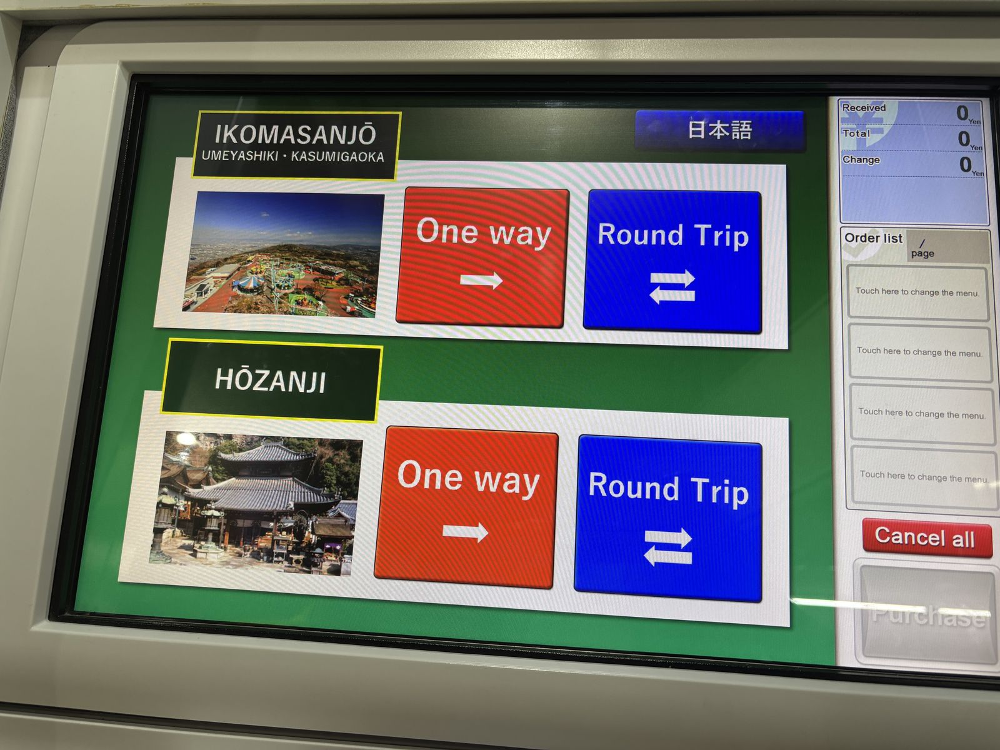

From Torii-mae Station beside Ikoma Station, the cable car climbs through Hozan-ji on its way to the summit station. This is one of the oldest cable railways in Japan, and after dark the city lights unfold below as you rise.
Finding the platform: from Ikoma Station, follow the connecting walkway signs straight to Torii-mae Station — it's well marked. If you're unsure, ask anyone nearby or a station staff member; locals are always happy to point the way.
Buying your ticket: tickets are sold from a machine at the platform. A round-trip ticket (¥1,000) is recommended over separate one-way fares.

Timing matters: departures after 18:00 run only on days the mountaintop amusement park operates its night hours — that's the whole reason tonight's route is possible. Confirm the current timetable before you go. Every train requires a transfer at Hozan-ji Station (about a 4-minute wait) before continuing up to the summit. Evening departures from Torii-mae around 19:20 connect to a 19:29 departure from Hozan-ji, arriving at Ikomasanjo by 19:36 — a good target if you're arriving from City Hall around 7pm.